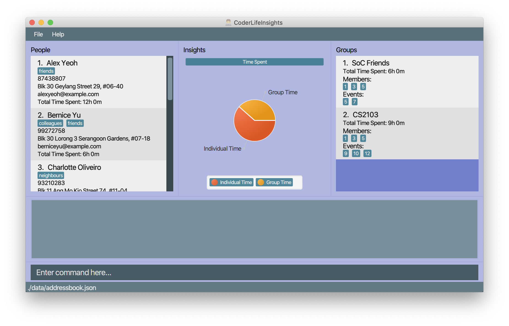

By: Team CoderLifeInsights Since: Mar 2020 Licence: MIT
- 1. Introduction
- 2. Quick Start
- 3. Features
- 3.1. Viewing help :
help - 3.2. Adding a person:
add_person - 3.3. Listing saved data :
list - 3.4. Editing a person :
edit - 3.5. Deleting an object :
delete - 3.6. Locating persons by name:
find - 3.7. Import Life CSV:
import - 3.8. Export Life CSV:
export - 3.9. Adding an Event:
add_event - 3.10. Suggestions:
suggest - 3.11. Getting a random person:
random[coming in v1.4] - 3.12. Social Group:
add_group - 3.13. Edit Group:
edit_group - 3.14. Insights:
view - 3.15. Clearing all entries :
clear - 3.16. Exiting the program :
exit - 3.17. Saving the data
- 3.18. Encrypting data files
[coming in v2.0] - 3.19. FAQ
- 3.20. Command Summary
- 3.1. Viewing help :
1. Introduction
CoderLifeInsights (CLI) is a desktop application that provides you insights and suggestions to your social life as a programmer using a CLI (Command Line Interface).
2. Quick Start
-
Ensure you have Java
11or above installed in your Computer. -
Download the latest
coderlifeinsights.jarhere. -
Copy the file to the folder you want to use as the home folder for your CoderLifeInsights.
-
Double-click the file to start the app. The GUI should appear in a few seconds.
 -
Type the command in the command box and press Enter to execute it.
e.g. typinghelpand pressing Enter will open the help window. -
Some example commands you can try:
-
list_persons: lists all contacts -
addn/John Doe p/98765432 e/johnd@example.com a/John street, block 123, #01-01: adds a contact namedJohn Doeto your Life. -
delete3: deletes the 3rd contact shown in the current list -
exit: exits the app
-
-
Refer to Section 3, “Features” for details of each command.
3. Features
Command Format
-
Words in
UPPER_CASEare the parameters to be supplied by the user e.g. inadd n/NAME,NAMEis a parameter which can be used asadd n/John Doe. -
Items in square brackets are optional e.g
n/NAME [t/TAG]can be used asn/John Doe t/friendor asn/John Doe. -
Items with
… after them can be used multiple times including zero times e.g.[t/TAG]…can be used ast/friend,t/friend t/familyetc. -
Parameters can be in any order e.g. if the command specifies
n/NAME p/PHONE_NUMBER,p/PHONE_NUMBER n/NAMEis also acceptable.
3.1. Viewing help : help
Format: help
3.2. Adding a person: add_person
Adds a person to the CoderLifeInsights
Format: add_person n/NAME p/PHONE_NUMBER e/EMAIL a/ADDRESS [t/TAG]…
| A person can have any number of tags (including 0) |
Examples:
| Example | Command | Result |
|---|---|---|
Add a person John Doe to CoderLifeInsights |
|
John Doe is added to CoderLifeInsights with the input information. |
Add a person Betsy Crowe to CoderLifeInsights |
|
Betsy Crowe is added to CoderLifeInsights with the input information. |
3.3. Listing saved data : list
Shows a list of recorded information in CoderLifeInsights.
Format: list_LIST_PARAMETER
Examples:
| Example | Command | Result |
|---|---|---|
Show all persons |
|
Returns a list of the saved persons in CoderLifeInsights. |
Show all groups |
|
Returns a list of the saved groups in CoderLifeInsights. |
3.4. Editing a person : edit
Edits an existing person in the CoderLifeInsights.
Format: edit INDEX [n/NAME] [p/PHONE] [e/EMAIL] [a/ADDRESS] [t/TAG]…
Examples:
| Example | Command | Result |
|---|---|---|
Change the phone number and email address of the 1st person |
|
Edits the phone number and email address of the 1st person to be |
Change the name of the second person and remove tags |
|
Edits the name of the 2nd person to be |
3.5. Deleting an object : delete
Deletes an entity, such as Person, Group, or Event from the CoderLifeInsights
Format: delete_person ID (for person)
delete_group ID (for group)
Examples:
| Example | Command | Result |
|---|---|---|
Delete the 2nd person in the fully listed persons list |
|
Deletes the 2nd person in CoderLifeInsights. |
Delete the 2nd group in the fully listed groups list |
|
Deletes the 2nd group in CoderLifeInsights. |
Find a person and delete the person from the list returned |
|
Deletes the 1st person in the results of the |
3.6. Locating persons by name: find
Finds persons whose names contain any of the given keywords.
Format: find KEYWORD [MORE_KEYWORDS]
Examples:
| Example | Command | Result |
|---|---|---|
Find all persons whose name contains John |
|
Returns |
Find all persons whose name contains 'Betsy', 'Tim' or 'John' |
|
Returns all persons having names |
3.7. Import Life CSV: import
Imports your existing Life CSV into the application
Format: import l/LIFE_FILE_PATH g/GROUP_FILE_PATH e/EVENT_FILE_PATH
Examples:
| Example | Command | Result |
|---|---|---|
Import Life from file "life.csv", group data from "groups.csv" and event data from "events.csv" |
|
Imports your Life from |
Import Life from file "life.csv" at specific file path |
|
Imports your Life from |
Import Life from file "life.csv" at specific file path |
|
Imports your Life from |
3.7.1. Retrieving File Path
For Windows:
-
Navigate to the file where you saved CoderLifeInsights data files.
-
Click on the address bar of File Explorer window.
-
Refer to the diagram below for reference.
For Mac:
* Navigate to the file where you saved CoderLifeInsights data files.
* Right-click on the CSV File and select Get info.
* Refer to the diagram below for reference.

3.7.2. CSV File Constraints
For Life.csv:
Before using the import command on Life.csv, please ensure the following headers are present.
-
name -
phone -
email -
address -
tagged -
time -
places -
activities
Refer to image below for reference:
Tags, Places and Activities should be separated by a semi-colon.
Example:
-
friends;school-mate -
Orchard;NUS -
Gym;Rock-Climbing
For Groups.csv:
Before using the import command on Groups.csv, please ensure the following headers are present.
-
name -
groupId -
timeSpent -
memberIDs -
eventIDs -
places -
activities
memberIDs, eventIDs should be separated by a semi-colon.
Example:
-
1;2;3 -
5;6
For Events.csv:
Before using the import command on Events.csv, please ensure the following headers are present.
-
eventId -
activity -
place -
withPerson -
withGroup -
time
3.8. Export Life CSV: export
Exports your existing Life into a CSV file.
Format: export l/LIFE_FILE_NAME g/GROUP_FILE_NAME e/EVENT_FILE_NAME
Remarks:
-
On the very first run of CoderLifeInsights, this command is invalid as there is no saved data and CoderLifeInsights is using a sample data file to display sample contacts. Please proceed to add events, groups or persons before trying to export the information to the respective CSV files.
Examples:
| Example | Command | Result |
|---|---|---|
Export current life and group data |
|
Exports your Life to |
3.9. Adding an Event: add_event
Adds an event to a person or a group at the specified INDEX.
Format for adding to a person: add_event ACTIVITY_NAME place/PLACE_NAME time/TIME m/INDEX
Format for adding to a group: add_event ACTIVITY_NAME place/PLACE_NAME time/TIME g/INDEX
Remarks:
-
TIME has to be in entered in the format
HHMM:
Input for a time of 1 hour and 5 minutes would be:time/105
Input for a time of 9 minutes would be:time/09 -
MM entered has to be between 0 and 60 (1 to 59).
-
The INDEX refers to the index number shown in the displayed person list. The INDEX must be a positive integer.
-
CoderLifeInsights uses 1-indexing.
Examples:
| Example | Command | Result |
|---|---|---|
Adding an event with a person from the fully listed persons list |
|
Creates an Event Date Night at MBS with a time spent of 3 hours and adds it to the second person in CoderLifeInsights. |
Adding an event with a group from the fully listed groups list |
list_groups add_event Dancing lessons place/Changi Country Club time/130 g/1 |
Creates an Event Dancing lessons at Changi Country Club with a time spent of 1 hour and 30 minutes and adds it to the first group in CoderLifeInsights. |
Adding an event to a person after using the find function |
|
Creates an Event Date Night at MBS with a time spent of 3 hours and adds it to the first result returned by the |
3.10. Suggestions: suggest
Suggests a person to hang out with
Format: suggest SUGGESTION_PARAMETER
Examples:
| Example | Command | Result |
|---|---|---|
Look for a person to do something with |
|
Returns a person to hangout with. |
Look for a place to do something at |
|
Returns a place to go to. |
Look for an activity to do |
|
Returns an activity to do. |
-
suggest person
Returns a person to hangout with. -
[coming v1.4]suggest place
Returns a place to go to. -
[coming v1.4]suggest activity
Returns an activity to do.
3.11. Getting a random person: random [coming in v1.4]
Finds a random person from contacts saved in CoderLifeInsights.
Format: random
Example:
-
random
Returns the name of a random person saved in CoderLifeInsights.
3.12. Social Group: add_group
Creates an empty social group with given name.
Format: add_group <name> <member_ids>
| A group can have any number of member_ids (including 0) |
Examples:
| Example | Command | Result |
|---|---|---|
Create a group |
|
Creates a group named |
Create a group and add members into that group |
|
Creates a group named |
3.13. Edit Group: edit_group
Edit a given person id with a given group id
Format: edit_group <person-id> <name> <member_ids>
Examples:
| Example | Command | Result |
|---|---|---|
Change name of 1st group |
|
Changes the name of the group with index 1 in CoderLifeInsights to |
Edit the members in the 1st group |
|
Changes the members of the group with index 1 in CoderLifeInsights to |
Change the name and members of the first group |
|
Changes both the name and members of the group with index 1 in Coder Life Insights. Both values overwritten. |
3.14. Insights: view
Lists insights about the user’s interactions with a particular friend or group, in the form of a pie chart.
These include places visited, time spent, and/or activities done with the friend or group.
Format: view INSIGHT_PARAMETER
3.15. Clearing all entries : clear
Clears all entries from the CoderLifeInsights.
Format: clear
3.16. Exiting the program : exit
Exits the program.
Format: exit
3.17. Saving the data
CoderLifeInsights data are saved in the hard disk automatically after any command that changes the data.
There is no need to save manually.
3.18. Encrypting data files [coming in v2.0]
{explain how the user can enable/disable data encryption}
3.19. FAQ
Q: How do I transfer my data to another Computer?
A: Install the app in the other computer and overwrite the empty data file it creates with the file that contains the data of your previous CoderLifeInsights folder.
3.20. Command Summary
-
Add
add n/NAME p/PHONE_NUMBER e/EMAIL a/ADDRESS [t/TAG]…
e.g.add n/James Ho p/22224444 e/jamesho@example.com a/123, Clementi Rd, 1234665 t/friend t/colleague -
Clear :
clear -
Delete :
delete INDEX
e.g.delete 3 -
Edit :
edit INDEX [n/NAME] [p/PHONE_NUMBER] [e/EMAIL] [a/ADDRESS] [t/TAG]…
e.g.edit 2 n/James Lee e/jameslee@example.com -
Find :
find KEYWORD [MORE_KEYWORDS]
e.g.find James Jake -
Import :
import FILE_PATH
e.g.import life.csv -
Export :
export FILE_NAME
e.g.export life.csv -
Suggest :
suggest SUGGESTION_PARAMETER
e.g.suggest person -
Insight :
view INSIGHT_PARAMETER
e.g.view 1 activities -
List :
list_LIST_PARAMETER
e.g.list_persons -
Help :
help -
Random :
random